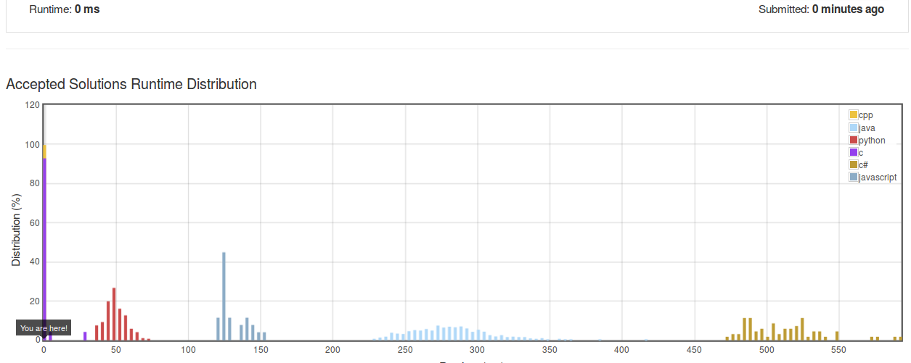

Two numbers are ever quite alike!
Summary Ranges
Given a sorted integer array without duplicates, return the summary of its ranges.
For example, given [0,1,2,4,5,7], return ["0->2","4->5","7"].
As usual, below my proposed solution but try to code it by yourself ;)
vector<string> summaryRanges(vector<int>& nums) {
vector<string> ranges;
// Check if nums is empty
if(nums.size() < 1)
return ranges;
int vmin, prev;
vmin = nums[0];
prev = vmin;
for(int i=1; i < nums.size(); i++)
{
if(nums[i] > prev + 1)
{
if(prev == vmin)
ranges.push_back(to_string(vmin));
else
ranges.push_back(to_string(vmin) + "->" + to_string(prev));
vmin = nums[i];
prev = vmin;
}
else
prev = nums[i];
}
if(prev == vmin)
ranges.push_back(to_string(vmin));
else
ranges.push_back(to_string(vmin) + "->" + to_string(prev));
return ranges;
}
